Il percorso scientifico
Prima dell’impresa c’è stata la ricerca. Tra Pisa e Anversa ho studiato il movimento umano e le reti di neuroni, e ho imparato un modo di lavorare che non ho più lasciato: domande precise, esperimenti rigorosi, risultati verificabili. Poi ho scelto un’altra strada, ma il mondo scientifico resta una parte di me, e sono orgoglioso del contributo che ho potuto dargli.

Formazione e ricerca
- Dottorato di ricerca (2012–2016)
- PhD in Biomedical Science – Neuroscience, University of Antwerp (Belgio), laboratorio di Theoretical Neurobiology and Neuroengineering del Prof. Michele Giugliano. Tesi: Network electrophysiology: exploring emerging properties in (dys)functional neuronal circuits in vitro. Studio delle dinamiche di reti neuronali in coltura con matrici di microelettrodi, controllo “closed-loop” e optogenetica. Borsa europea Marie Curie (NAMASEN, Initial Training Network del 7° Programma Quadro); partecipazione a tre progetti di ricerca finanziati dall’Unione Europea.
- Laurea specialistica in Ingegneria Biomedica (2012)
- Università di Pisa, 110/110. Tesi all’Istituto di Biorobotica della Scuola Superiore Sant’Anna: Analisi di algoritmi di fattorizzazione per l’estrazione di sinergie muscolari.
- Laurea triennale in Ingegneria Biomedica (2008)
- Università di Pisa. Tesi al Dipartimento di Ingegneria Chimica sul rilascio controllato di farmaci da microsfere polisaccaridiche.
Pubblicazioni
Articoli su riviste internazionali peer-reviewed
- Pulizzi R., Musumeci G., Van den Haute C., Van De Vijver S., Baekelandt V., Giugliano M. (2016). Brief wide-field photostimuli evoke and modulate oscillatory reverberating activity in cortical networks. Scientific Reports, 6. doi:10.1038/srep24701
- Segura I., Lange C., Knevels E., Moskalyuk A., Pulizzi R., et al. (2016). The Oxygen Sensor PHD2 Controls Dendritic Spines and Synapses via Modification of Filamin A. Cell Reports, 14(11), 2653–2667. doi:10.1016/j.celrep.2016.02.047
- Peelaerts W., Bousset L., Van der Perren A., Moskalyuk A., Pulizzi R., et al. (2015). α-Synuclein strains cause distinct synucleinopathies after local and systemic administration. Nature, 522(7556), 340–344. doi:10.1038/nature14547
- Mahmud M., Pulizzi R., Vasilaki E., Giugliano M. (2014). QSpike tools: a generic framework for parallel batch preprocessing of extracellular neuronal signals recorded by substrate microelectrode arrays. Frontiers in Neuroinformatics, 8, 1–14. doi:10.3389/fninf.2014.00026
- Barbani N., Cristallini C., Pulizzi R., et al. (2009). Preparation and functional characterization of a polysaccharidic matrix microsphere-shaped for controlled drug release. Journal of Applied Biomaterials & Biomechanics, 7(1), 54.
Capitolo di libro
- Couto J., Linaro D., Pulizzi R., Giugliano M. (2016). Closed-Loop Methodologies for Cellular Electrophysiology. In: Closed Loop Neuroscience, Elsevier. doi:10.1016/B978-0-12-802452-2.00013-5
Atti di conferenze peer-reviewed
- 9th MEA Meeting, Reutlingen (2014) — due contributi.
- International Conference on Electrical Engineering and Information & Communication Technology (ICEEICT 2014), IEEE.
Conferenze e scuole internazionali
Presentazioni, tra le altre, alla Royal Society di Londra, al FENS Forum of Neuroscience (Milano), al MEA Meeting (Reutlingen), ai meeting WiBrain (Bruxelles, Liegi) e al workshop finale NAMASEN (Danzica). Scuole e corsi internazionali a Trieste, Padova, Göttingen, Sheffield e Anversa.
Un ricordo
Tra i ricordi più belli di quegli anni c’è anche una conversazione con Edvard Moser, Premio Nobel per la Fisiologia o la Medicina 2014: un piccolo privilegio che racconta bene quanto fosse stimolante quell’ambiente.